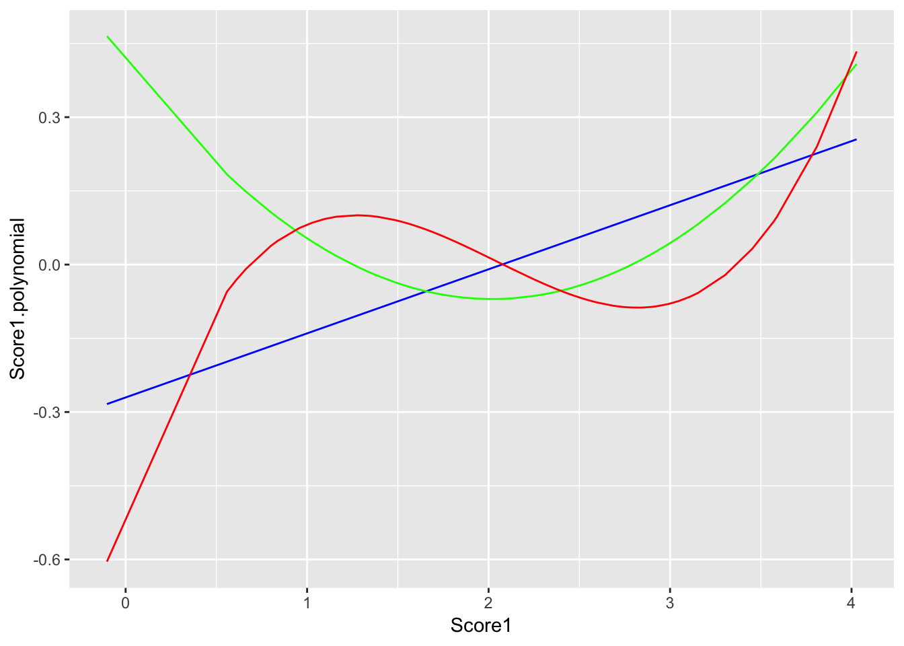

Chapter 7 Common Data Manipulations
In R, the term data wrangling is often times used to refer to performing data manipulation and transformations. The functions you will learn about in this Chapter come from the datawrangling package I developed.
There are certain data transformations we use on a regular basis that would require several steps and lines of code to do. datawrangling allows you to perform these transformation in a single line of code. Hopefully, datawrangling will get you to start using R more easily for data analysi.
I am hosting the datawrangling package on GitHub. To download packages on GitHub you first need to download the devtools package.
Now install the datawrangling package:
Save a new R script file as 7_transform.R
For this Chapter, let’s create a dataframe to use as an example for common data manipulations using datawrangling. Don’t worry about what this code means for now, just copy it into your script and run it.
import <- data.frame(ID = c(1:100), Score1 = rnorm(100, mean = 2, sd = .8), Score2 = rnorm(100, mean = 7, sd = 1.1), Score3 = rnorm(100, mean = 10, sd = 1.8), Score4 = rnorm(100, mean = 20, sd = 2.3))
head(import)
## ID Score1 Score2 Score3 Score4
## 1 1 1.173465 7.180342 10.795748 20.36627
## 2 2 2.085690 7.115603 13.587042 20.76010
## 3 3 4.388996 6.777154 13.521919 17.85488
## 4 4 2.874224 6.043463 7.638572 17.76882
## 5 5 1.628682 6.974126 13.337230 17.99323
## 6 6 2.717983 6.947006 9.754423 19.416187.1 Descriptive Statistics
First you should know how to compute some basic descriptive statistics.
Basic descriptive statistics include mean, median, standard deviation, max, min, skew, kurtosis, etc…
The functions to calculate these are pretty straightforward:
Base R
maximum:
max()minimum:
min()count:
n()mean:
mean()median:
median()standard deviation:
sd()variance:
var()quantiles (percentiles):
quantile()specify the percentiles with the argument
probs =(default is c(0, .25, .5, .75, 1))
e1071 package
skewness:
skewness(variable, na.rm = TRUE, type = 2)kurtosis:
kurtosis(variable, na.rm = TRUE, type = 2)
For all of these you need to specify na.rm = TRUE if the variable column has missing data. It is best to just always set na.rm = TRUE. For example,
To calculate the overall mean on Score1 would look like
7.2 Centering and Standardizing Variables
The function center() will create either unstandardized or standardized (z-scored) centered variables. The list of arguments that can be passed onto the function are:
x: dataframe
variables: c() of columns to center
standardize: Logical. Do you want to calculate zscores? (Default = FALSE)
Example:
library(datawrangling)
data <- center(import, variables = c("Score1", "Score2", "Score3", "Score4"), standardize = TRUE)View the dataframe data. You will notice that there are now 4 additional columns: Score1_z, Score2_z, Score3_z, and Score4_z.
If you choose to to calculate centered (unstandardized) scores, then standardize = FALSE. And it will create variables with the suffix _c.
7.3 Trimming
The function trim() will replace outlier scores that exceed a certain z-score cutoff.
There are several options for how to replace the outlier scores. Replace with
“NA” (missing value)
“cutoff” (the z-score cutoff value, e.g. 3.5 SDs)
“mean”
“median”
The arguments that can be specified are:
x: dataframe
variables: c() of variables to be trimmed. option to set
variables = "all"to trim all variables in a dataframe. But then must specifyid =cutoff: z-score cutoff to use for trimming (default: 3.5)
replace: What value should the outlier values be replaced with. (default: replace = “NA”)
id: Column name that contains subject IDs. **ONLY needs to be used if
variables = "all"
Example:
data <- import %>%
trim(variables = c("Score1", "Score2", "Score3", "Score4"), cutoff = 3.5, replace = "NA", id = "ID")## Warning in if (variables == "all") {: the condition has length > 1 and only
## the first element will be usedNotice how you don’t even need to center() the variables first. The centering is being done inside of trim(). You can evaluate outliers and replace with different values (replace =) all in one function and one line of code.
7.4 Composites
The composite() function allows you to easily create a composite score from multiple variables and also specifiy a certain criteria for how many missing values are allowed.
data <- import %>%
composite(variables = c("Score1", "Score2", "Score3"),
type = "mean",
standardize = TRUE,
name = "Score_comp",
missing.allowed = 1)The function composite() will create composite scores out of specified columns. Right now you can only create “mean” composite scores. In the future I plan on adding “sum” and “factor score” composite types.
Here is a list of the arguments you can specifiy:
x: dataframe
variables: c() of columns to create the composite from
type: What type of composite should be calculated?, i.e. mean or sum. (Default = “mean”).
standardize: Logical. Do you want to calculate the composite based on standardized (z-score) values? (Default = TRUE)
name: Name of the new composite variable to be created
missing.allowed: Criteria for the number of variables that can having missing values and still calculate a composite for that subject
The remaining functions do not come from the datawrangling package but you may find them useful nonetheless.
7.5 Scale Transformations
7.5.1 log
[insert base off of Field]
7.5.2 polynomial
You can create orthogonal polynomials of variables using the poly() function and specify the degree of polynomial to go up to with degree =
You can see it creates up to three degrees of polynomials on the Score1 variable. The first degree is a linear, second is a quadratic, and third is cubic. Let’s say we want to create three new columns with each of these three polynomials. To do so we need to individually access each vector such as
library(dplyr)
data <- import %>%
mutate(Score1.linear = poly(Score1, degree = 3)[ , 1],
Score1.quadratic = poly(Score1, degree = 3)[ , 2],
Score1.cubic = poly(Score1, degree = 3)[ , 3])Here is plot to show you visually what happened

7.6 Custom Transformations
In general, with mutate() you can specify any custom transformation you want to do on a variable. For instance, if you want to subtract each score by 5, and divide by 10 then you can do it! I don’t know why you would ever want to do that, but you can.
Or take the sum of Score1 and Score2 and divide by the difference between Score3 and Score4.
Something